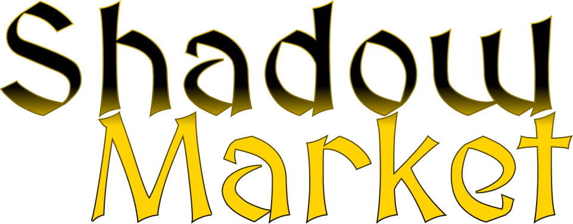

Read the person
Posture, pauses, repeated phrases. The customer is the clue.

A quiet horror merchant sim about reading between a customer’s words, and living with what you choose to sell.
Each night, strangers find your lantern. They bring a request that sounds almost ordinary. Your shelves hold objects that might help, or make the ache worse.
There is no combat. No chase. Just a small stall, a handful of choices, and a world that remembers every transaction. The horror gathers slowly in the details: a light gone dim, a reflection that lingers, a familiar face returning with something changed.
Posture, pauses, repeated phrases. The customer is the clue.
Objects carry symbolism, not stats. The player makes the connection.
Every exchange leaves a trace in the light, the stall, or the next visitor.
Listen. Choose an object. See what the market keeps.
“Do you have something to quiet my shadow?”A glance that keeps falling to the floor.
↳ Choose whichever object you think fits. The study responds to your interpretation; it won’t mark you right or wrong.
Objects are visual metaphors first. Each one has a meaning, a world effect, a customer affinity, and a place in the story. Pick one to turn it in the light.
Select an object to uncover its ledger note.
Short sessions. Long consequences.
Five to eight minutes per night.
Arrange the shelf. Read the ledger. Choose three featured objects.
THE STALL IS STILL YOURSSix to eight visitors approach with requests they can barely explain.
LOOK CLOSEROffer an object, or decline. The visitor leaves a mark either way.
THE MARKET REMEMBERSSee what shifted. Carry the change into the next night.
NOTHING RESETS CLEANLYHorror comes from accumulating distortions, uncanny behaviour, and consequences.
Never from a sudden scare.
Four acts trace a soft rise from curiosity to intimate dread. The truth arrives quietly, like someone who has been standing there all along.
Learn the objects. Meet the Lost. The first small wrongness.
CURIOUS UNEASEBorrowers return. Echoes repeat what they never said.
UNEASY RECOGNITIONDistortion crosses the threshold. The market knows your name.
QUIET DREADThe market is choosing a successor. Your choices shape who you become.
INTIMATE HORRORThe mechanical layer stays legible and restrained, so the emotional layer can remain uncertain.
Stability and Distortion replace combat stats. They shape lighting, visitors, item unlocks, and how far the world bends.
Four customer types speak and behave differently. The design asks players to notice patterns, not hunt for a glowing answer.
Big touch targets, readable dialogue, visual equivalents for audio cues, adjustable text, and restrained camera motion.
Shadow Market is a study in quiet consequence: small choices that keep echoing after the customer has gone.
Return to the first night ↑